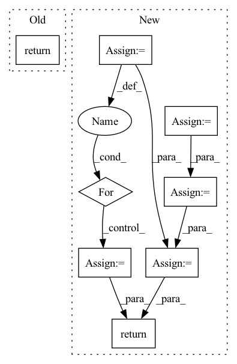

Pattern ID :668
Before Change
x = self.token_emb(x)
out = self.layers(x)
out = self.to_logits(x)
return out
After Change
x = self.token_emb(x)
b, t, d = x.shape
mem = default(mem, torch.empty(self.depth, b, 0, d))
hidden_states = []
for attn, ff, m in zip(self.attn_layers, self.ff_layers, mem):
hidden_states.append(x)
x = attn(x, mem = m)
x = ff(x)
out = self.to_logits(x)
hidden_states = torch.stack(hidden_states)
new_mem = torch.cat((mem, hidden_states), dim=2)[:, :, -self.mem_len:, :].detach()
return out, new_mem
In pattern: SUPERPATTERN
Frequency: 3
Non-data size: 8
Instances Fragment ID: 2482532
Project Name: lucidrains/compressive-transformer-pytorch
Commit Name: 47a5b8448090fce7ca1f7356001fb2ac381c2239
Time: 2020-06-30
Author: lucidrains@gmail.com
File Name: compressive_transformer_pytorch/compressive_transformer_pytorch.py
M Class Name: CompressiveTransformer
N Class Name: CompressiveTransformer
M Method Name: forward(3)
N Method Name: forward(2)
M Parent Class: nn.Module
N Parent Class: nn.Module
M File Name: compressive_transformer_pytorch/compressive_transformer_pytorch.py
N File Name: compressive_transformer_pytorch/compressive_transformer_pytorch.py
M Start Line: 102
M End Line: 105
N Start Line: 112
N End Line: 128
Before Change
super().__init__()
def forward(self, x):
return x
class Teacher(nn.Module):
def __init__(After Change
check_shape(proprio, "b d", d = self.proprio_dim)
check_shape(extero, "b n d", n = self.num_legs, d = self.extero_dim)
latent_extero = self.extero_encoder(extero)
latent_extero = rearrange(latent_extero, "b ... -> b (...)")
// RNN
if not exists(hiddens):
hiddens = (None,) * len(self.gru_cells)
gru_input = torch.cat((proprio, latent_extero), dim = -1)
next_hiddens = []
for gru_cell, prev_hidden in zip(self.gru_cells, hiddens):
gru_input = gru_cell(gru_input, prev_hidden)
next_hiddens.append(gru_input)
gru_output = gru_input
// attention gating of exteroception
attention_gate = self.to_extero_attn_gate(gru_output)
gated_extero = latent_extero * attention_gate.sigmoid()
// belief state and add gated exteroception
belief_state = self.belief_state_encoder(gru_output)
belief_state = sum_with_zeropad(belief_state, gated_extero)
// to action logits
action_logits = self.to_action_logits(belief_state)
return action_logits, next_hiddens
class Teacher(nn.Module):
def __init__( Fragment ID: 2482516
Project Name: lucidrains/anymal-belief-state-encoder-decoder-pytorch
Commit Name: 31d37d8d81db1d32cbfae83f1e43a669e4c8d5ea
Time: 2022-04-17
Author: lucidrains@gmail.com
File Name: anymal_belief_state_encoder_decoder_pytorch/networks.py
M Class Name: Student
N Class Name: Student
M Method Name: forward(4)
N Method Name: forward(2)
M Parent Class: nn.Module
N Parent Class: nn.Module
M File Name: anymal_belief_state_encoder_decoder_pytorch/networks.py
N File Name: anymal_belief_state_encoder_decoder_pytorch/networks.py
M Start Line: 74
M End Line: 75
N Start Line: 119
N End Line: 157
Before Change
u = x.mean(-1, keepdim=True)
s = (x - u).pow(2).mean(-1, keepdim=True)
x = (x - u) / torch.sqrt(s + self.variance_epsilon)
return self.gamma * x + self.beta
After Change
return self.weight * x + self.bias
else :
inputs = x[0]
cond = x[1]
for _ in range(len(inputs.shape) - len(cond.shape)):
cond = cond.unsqueeze(dim=1)
weight = self.weight + self.weight_dense(cond)
bias = self.bias + self.bias_dense(cond)
u = inputs.mean(-1, keepdim=True)
s = (inputs - u).pow(2).mean(-1, keepdim=True)
x = (inputs - u) / torch.sqrt(s + self.variance_epsilon)
return weight * x + bias
Fragment ID: 2482524
Project Name: 920232796/bert_seq2seq
Commit Name: 76a9cf45cad987e423a9cc511eef0d4eb49620ac
Time: 2020-06-22
Author: xingzhaohu@xingzhaohudeMacBook-Pro.local
File Name: bert_seq2seq/model/bert_model.py
M Class Name: BertLayerNorm
N Class Name: BertLayerNorm
M Method Name: forward(2)
N Method Name: forward(2)
M Parent Class: nn.Module
N Parent Class: nn.Module
M File Name: bert_seq2seq/model/bert_model.py
N File Name: bert_seq2seq/model/bert_model.py
M Start Line: 65
M End Line: 68
N Start Line: 72
N End Line: 93